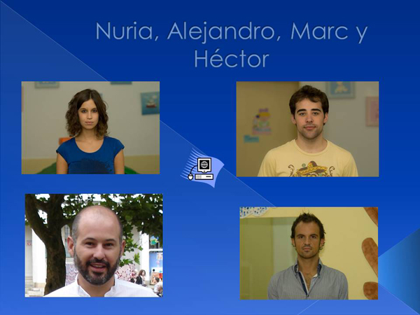

Búsqueda de empleo.
Caso práctico

Carmen, la coordinadora de los Ciclos de Formación Profesional a Distancia del Instituto, ha citado para el martes 22 de Septiembre a los alumnos y alumnas matriculados en D.A.M., D.A.W. y A.S.I.R., para una primera reunión informativa. El grupo es numeroso y llega la ronda de presentaciones.
Héctor se presenta: "Tengo 27 años, saqué en su momento el título de Graduado en E.S.O. y he trabajado desde entonces en distintos trabajos con contratos temporales. Ahora estoy trabajando como comercial en una empresa de telefonía móvil. He decidido estudiar y por eso me presenté a la prueba de acceso. Del ciclo espero aprender y poder trabajar en algo que me gusta".
Le toca el turno a Nuria, una de las pocas chicas del grupo. " Tengo 18 años, he terminado el Bachillerato, me gusta mucho la informática así que quiero hacer este ciclo mientras trabajo cuidando niños, y cuando termine me plantearé ir a la universidad".
Ahora se levanta Marc. "Tengo 20 años, he terminado el ciclo de grado medio de Sistemas Microinformáticos y Redes y quiero seguir formándome en este campo porque creo que tiene mucho futuro, así que hice y superé la prueba de acceso a grado superior. Espero que este ciclo sea tan interesante como el que he finalizado y además me abra las puertas del mercado laboral".
Sigue Alejandro, " Yo tengo 37 años, hice hace años el antiguo ciclo formativo de Aplicaciones de Sistemas Informáticos y monté, junto con unos amigos, una empresa de productos y servicios informáticos. El mundo de la programación me encanta, y creo que en cualquier sector siempre hay que estar reciclándose y actualizándose por eso creo que este ciclo de Desarrollo de Aplicaciones Multiplataforma me va a ser de gran utilidad para actualizar los conocimientos que tengo en esta materia y me permitirá mejorar los servicios que ofrece mi empresa".
Las presentaciones se van sucediendo y se van planteando dudas. ¿Este título vale para trabajar en Galicia? ¿Es un sector con grandes posibilidades? ¿Cuáles son las asignaturas? ¿Es difícil aprobar? Hace mucho tiempo que no estudio... ¿Se convalidan las prácticas? ¿En qué tipo de empresas podremos trabajar? Esto de los ciclos ¿es lo mismo que la FP antigua?
Carmen, la coordinadora, va contestando a todas las preguntas, le ayudan algunos profesores. La sesión se acaba y los nuevos alumnos y alumnas parece que se van más tranquilos. Queda por delante todo un curso que además estrena metodología E-learningElearningEs la educación a distancia visualizada a través de canales electrónicos (especialmente internet) utilizando para ello herramientas o aplicaciones como soporte de los procesos de enseñanza-aprendizaje.


![Imagen que muestra la relación entre los Ministerios de Educación y Empleo e Inmigración y el tipo de formación que imparten. En el esquema se ve el título Formación profesional. Debajo un cuadro a la izquierda con el texto “Ministerio de Educación”, del que sale una flecha a la derecha que va a otro cuadro con el texto “Formación profesional reglada”. Debajo hay otro cuadro a la izquierda con el texto “Ministerio de Empleo e Inmigración”, del que sale una flecha a la derecha que va a otro cuadro con el texto “Formación para el empleo”.](https://educacionadistancia.juntadeandalucia.es/formacionprofesional/pluginfile.php/114281/mod_scorm/content/0/FOL09_CONT_R29_sistema_fp.jpg "Formación profesional.")

{kind=link}
{kind=link}
{kind=link}
{kind=link}
{kind=link}
{kind=link}
{kind=link}